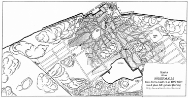
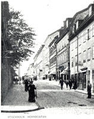
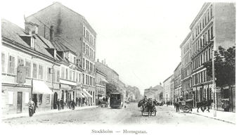
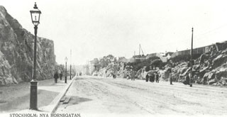
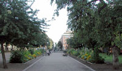
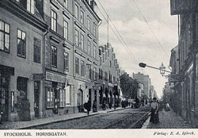
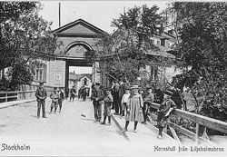
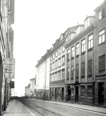
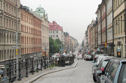
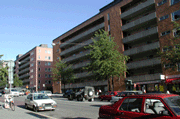

|
Hornsgatans historia
(hämtat från Stockholms stads hemsida )
HORNSGATAN PÅ 1600 - 1700-TALET
Det började bli trångt på den gamla Stadsholmen under 1600-talet och man började söka sig byggnadstomter utåt malmarna. Myndigheterna blev tvungna att planera gatunät och kvartersindelningar, där det hittills varit odlingar och betesmark.
Hornsgatan föddes ur renässansens idé om stadsbyggnad. Renässans-arkitekten Palladio lär ha sagt "att det i en stad inte kan finnas en mer angenäm syn än en rak, jämn och bred gata som på båda sidor har magnifika hus". Under 1640-talet lades en ny rutnätsplan över Södermalm med vinkelräta gator och fyrkantiga kvarter som inte tog hänsyn till det befintliga gatunätet eller terrängformerna. Planen kom att styra utvecklingen av stadsbyggandet på Södermalm under kommande sekler. Det betyder inte att man blundade för svårigheterna. Söders berg kallades för "Ointaglige fästningar" av 1600-talets stadsplanerare. På gaturegleringskartan från 1640-talet finns Hornsgatan planerad och sträckte sig från Slussen till den dåvarande stadsgränsen som kallades Västertull (nuvarande Zinkensdamm).

Gatuplan från 1640-talet. Hornsgatan är planerad och utritad från Slussen till dåvarande stadsgräns, Västertull (idag Zinkensdamm).
|
|
Hornsgatan blir till
Hornsgatans historia börjar dock inte förrän i början av 1660-talet, då man beslöt att bygga flottbro från Södermalms västligaste udde till Liljeholmen, där Årstaviken var smalast. Det var behovet av förbindelser till flottbron som gjorde att planen från 1640-talet förverkligades. Den tullplats som från början hade legat strax utom Timmermansgatan flyttades ut till brofästet. Invid flottbron låg en gård som hette Hornsgård (horn = berg/höjd) och därför fick den nya tullplatsen namnet Hornstull. Vägen som ledde från Slussen till den nya tullen fick heta Hornsgatan, Hornskroken och Hornstullsgatan.
|
Hornsgatan sträckte sig fram till nuvarande Zinkensdamm. Vid Mullvadsberget satte berget stopp för den raka gatan, så att den måste göra en sväng norrut och sedan böja av västerut igen. Svängen kom att kallas Horns krok, eller Hornskroken. I över två hundra år fick man väja för berget, som tillslut besegrades med dynamit. Den sista delen av förbindelsen efter Hornskroken fram till flottbron fick namnet Hornstullsgatan.
Bebyggelsen
Området närmast Slussen bestod på 1600-talet av en tät sten- och trähusbebyggelse. Längre västerut blev bebyggelsen alltmer öppnare och gatan kantades av trädgårdar blandat med enstaka hus och malmgårdar. 1759 brann kvarteren runt Maria kyrka ned. Förödelsen förde med sig regleringar som påverkade stadsbilden. Det kom förordningar om vändplaner och breddade gränder för att få fram fria ytor som skulle göra området både vackrare och mer eldsäkert. Likaså bestämdes att den nya bebyggelsen enbart fick bestå av stenhus, som stod emot eld bättre än de gamla trähusen.
Efter de svåra bränderna i Hornsgatans östra delar anlades ett nytt torg mellan Hornsgatan och Sankt Paulsgatan för att tjäna både som monumentalplats och brandgata. Det nya torget var det största i Stockholm. När det invigdes på 1760-talet var Adolf Fredrik var kung i Sverige och torget fick därför namnet Adolf Fredriks torg. Namnet ändrades 1963 till Mariatorget.
Lite årtal:
1661 Hornsgatan blir till genom beslutet att färjeläge ska anläggas på
Söders västra udde.
1759 Bränder härjar i Hornsgatans östra delar. Maria Magdalena kyrka
brinner ned.
1760-talet Adolf Fredriks torg invigs (idag Mariatorget).
HORNSGATAN PÅ 1800-TALET
Nytt stadsplaneförslag förändrar Horngatan
1866 lades ett nytt stadsplaneförslag över Stockholms framtida utveckling (Lindhagenplanen). I denna ingick ett förslag om breddning och sänkning av Hornsgatan, vilket innebar att alla hus behövdes rivas längs södra sidan av Hornsgatan. Under decennierna fram till sekelskiftet 1900 genomfördes detta stegvis.
|
För att Hornsgatan skulle få tillräcklig bredd bytte Stockholm stad till sig en 10 m bred remsa av Maria kyrkogård. Sträckan längs Hornsgatan grävde upp och gravplatserna flyttades till en gemensam plats längre in på kyrkogården. Staden lade ner stora kostnader och möda på att besegra backarna och göra Stockholm platt. Ångspårvagnarna fordrade en anpassning av lutningsför-hållandena. Sedan 1877 rullade ångspårvagnar i Stockholm, men söders backar var för branta. Det skulle dröja ytterligare 10 år innan spårvagnarna kom på Södermalm. 1887 tuffade den första spårvagnen upp från Slussen och vidare längs Hornsgatan fram till Hornskroken.
I kampen mot backarna fick man vid Mariaberget dock nöja sig med en halv seger. Den ena körbanan sänktes med 25 fot vid sträckningen förbi Maria kyrka och skulle gå likt en ravin mellan bergvägg och kyrkogårdsmur. Den andra körbanan fick fortsatt gå över backkrönet, och kom att kallas Puckeln, eller Hornsgatspuckeln. Det sprängdes och grävdes i tre år och några ytterligare hus fick rivas. På hösten 1904 var den nya leden klar med stödmurar och trappa vid den avskurna Bellmansgatan.
|
|

Hornsgatspuckeln före rivning av husen på
södra sidan, breddning och sänkning av gatan,
cirka 1895.
|

Hornsgatan breddad enligt Lindhagensplanen.
Vy från Zinkensdamm
mot öster,
cirka 1900.
|
|
Bergen besegras
År 1889 invigdes Södra Uppfartsvägen. Den var en ny väg genom Skinnarviksberget från Torkel Knutssonsgatan ner till Riddarfjärden. Den var i första hand tänkt som en uppfart från hamnen vid Söder Mälarstrand, men blev också en lindrigare väg upp från Slussen för alla draghästar. Backarna uppför Hornsgatspuckelns krön var väldigt branta och plågsamt för hästarna.
Hornsgatan hade nu sänkts och breddats i sin östligaste del. Nästa stora förändring för att fullborda Hornsgatan västerut var vid Hornskroken, där man sprängde sig igenom Mullvadsberget. Hornsgatan förlängdes västerut och spårvagnen kunde för första gången gå raka spåret till Hornstull. Hornsgatan fick nu sin fullbordan som rak renässansgata från Slussen till Hornstull.
|
|
Adolf Fredriks torg blir park
Från att tidigare har varit en ödslig sandplan fick Adolf Fredriks torg i slutet av 1800-talet sin parkprägel. Lindalléer hade i mitten av 1800-talet planterats längs torgets sidor. Vid sekelskiftet började man göra om torget till park. Skulpturen "Snöklockan" ställdes upp år 1900 och tre år senare invigdes "Tors fiske" och runtom lade man ut gräsmattor och planteringar. Torghandeln som hållit till närmast Hornsgatan förbjöds och flyttades istället in till Södermalms nya saluhall som byggts vid Hornsgatan.
|
|

Hornsgatan
går igenom Mullvardsberget
|

Mariatorget idag
|
|
Lite årtal:
1850 Nya Slussen invigs, som byggts av Nils Ericsson
1853 Hornsgatan får trottoarer
1859 De första gaslyktorna på gatorna tänds i Maria församling
1860 Järnväg tvärs över Årstaviken - ändstation Södra Station
1861 Vattenledning från Årstaviken som pumpas upp till Årstalunden
1862 Kloakledning under Krukmakaregatan och Zinkendammsområdet
ner till Årstaviken
1866 Förslag från Lindhagenkommittén om Hornsgatans breddning
1883 Katarinahissen invigs, som byggts av Knut Lindmark.
1887 De första spårvagnarna rullar på Södermalm
|
HORNSGATAN PÅ 1900-TALET
Den stora förändringen av Hornsgatan och dess kvarter i slutet av 1800-talet märkes också i byggbranschen. Mellan åren 1900-1910 byggdes 45 hus längs Hornsgatan, hus som nästan alla finns kvar.
Enda vägförbindelsen mellan Södermalm och övriga Stockholm var Slussbroarna. Alla söders huvudgator ledde ner mot Slussen, vilket medförde mycket folk som rörde sig på den lilla ytan mellan Södermalmstorg och Slussplan och affärsverksamheten var intensiv.
|
|

Elledningstrådar för spårvagnarna
längs Hornsgatan
|
|

Hornstull från Liljeholmen
|
|
Spårvagnar kör ända till Liljeholmen
Mellan Slussen och Hornstull gick ångspårvagnar. 1901 fick Hornsgatan el-spårvagnar, först av alla Stockholms gator. Det gick också spårvagnar från Liljeholmen till Mälarhöjden och Midsommarkransen, men enda förbindelsen mellan Hornstull och Liljeholmen var en flottbro.
Det blev därför mycket välkommet bland alla resenärer när en ny bro byggdes 1915. Den var en provisorisk träbro, men den höll för förortsspårvagnarna, som nu kunde fortsätta över till Hornstull. Den gamla flottbron hade haft sitt fäste vid slutet av Brännkyrkagatan, men den nya anlades som en förlängning av Hornsgatan, och
|
den gata dit den växande trafiken nu leddes in. Förbindelsen gjorde Hornsgatan till ett viktigt trafikstråk. Trafiken över Liljeholmsbron hade ökat kolossat sedan 1915 års bro byggdes och en ny bro blev nödvändig. Den nya Liljeholmsbron invigdes 1928 och tjänar fortfarande. Bron dubblerades 1956.
Slussen och Västerbron invigs
1935 invigdes den nya "trafikmaskinen" Slussen. Den gamla bebyggelsen hade röjts undan, den gamla Katarinahissen hade nedmonterats och en ny hade byggts upp. En dryg månad senare invigdes Västerbron. Samma år hade myndigheterna också beslutat att en ny trafikled, Söderleden, skulle dras tvärs över Söder, från Skanstull in mot stadens centrum. 1938 hade arbetet kommit igång på allvar. Minnesrika söderkvarter mellan Hornsgatan och Bangårdsgatan försvann i schaktmassorna och söderborna upptäckte till sin fasa att den nya leden skulle gå som en djup ravin tvärs igenom Söder.
Vid 1940-års slut fanns bara 4 000 civila fordon i gång i Stockholm. Hornsgatan var även utan biltrafiken inräknad en livlig trafikled. Gatan hade sex spårvägslinjer, tre innerstadslinjer (3, 4 och 10) och tre förortslinjer (16,17 och 18). Det fanns fler hästskjutsar på gatorna och fler cyklar. Vid en trafikräkning hösten 1940 registrerades 314.000 cyklar i Stockholm, vilket var nästan en fördubbling på ett år.
Hornsgatan får T-bana
1964 invigdes den sydvästra tunnelbanan som gick från T-centralen ut till Fruängen. Hornsgatsborna fick nu 4 tunnelbanestationer: Slussen, Mariatorget, Zinkensdamm och Hornstull. Ovan jord fortsatte spårvagnarna gå ännu någon tid. I samband med att högertrafiken infördes år 1967 upphörde all spårvägstrafik i Stockholm och därmed också Hornsgatans sex spårvägslinjer.
|
Hornsgatspuckeln utdömd
Trafiken ökade och medförde krav på mer utrymme, särskilt vid trängre delarna vid Hornsgatspuckeln. Till Hornsgatan styrdes trafiken från alla sidogatorna med ständiga köer som följd. Stadsplaneringen på 1960-talet gick framför allt ut på att öka framkomligheten för bilarna.
Att riva hus och bredda gator drevs på av byggbolagen och Hornsgatspuckeln blev så gott som dödsdömd. I början av 1960-talet föreslog en utredning att man skulle ta bort Hornsgatspuckeln och den bebyggelse som hade bevarats där. Det väckte en stark folk-opinion, som till skillnad från vad som var fallet i Klarakvarteren, lyckades rivnings-planerna stoppas. Denna decennielånga stridsfråga avgjordes till slut med det generella rivningsförbudet av fastigheter i hela Stockholms innerstad som infördes 1974. Istället började nu en period med sanering och upprustning av äldre bygg-nader, vilket blev en lyckosam tid för Horns-gatan som hade så många sekelskiftshus.
|
|

Hornsgatan öster om "Puckeln", cirka 1905.
Vy mot Södra stadshuset, idag Stadsmuseet
|
|
Bebyggelse
Hornsgatans bebyggelse utmärker sig den senare utvecklingen av 1900-talet främst i form av de loftgångshus och bostadskaserner som uppfördes väster om Zinkensdamm under 60 -70- och 80-talet. Öster om Zinkensdamm domineras Hornsgatan av byggnader från före sekelskiftet 1900, som genomgående mycket varierade och rikt utsmyckade fasader. Byggandet under andra halvan av 1900-talet innebar ett brott med dessa klassiska stadsbyggnadsideal. Modernismens idéer om hus i park frikopplade från gatan och storskalighet och rationellt byggande präglar nu den västligaste delen av Hornsgatan och ger det en egen karaktär.
Lite årtal:
1901 De första el-spårvagnarna rullar längs Horsgatan
1915 Ny träbro för spårvagnstrafik över till Liljeholmen invigs
1928 Dagens Liljeholmsbro invigs
1935 Nya Slussenlabyrinten och Västerbron invigs
1935 Beslut om Söderleden
1964 T-bana 2 invigs, som går från T-Centralen till Fruängen.
1967 Högertrafiken införs och spårvägstrafiken på Hornsgatan upphör
1974 Rivniningsförbud av fastigheter i Stockholms innerstad.
|
|

Sekelskiftshus - östra Hornsgatan

Loftgångshus - västra Hornsgatan
|
|
|